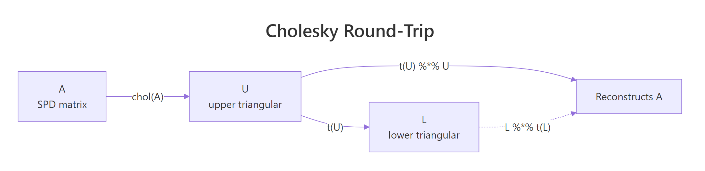
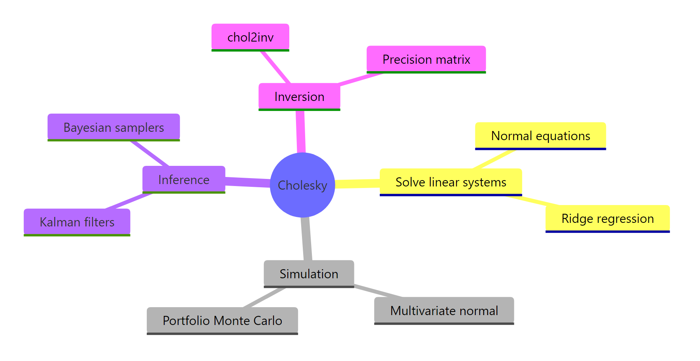

Cholesky Decomposition in R: chol() for Positive Definite Matrices
Cholesky decomposition factors a symmetric positive-definite matrix A into A = UT U, where U is upper triangular. In R, chol(A) returns that U factor in one call. Cholesky is the fastest decomposition for symmetric positive-definite matrices, roughly twice as fast as LU, and it powers multivariate normal simulation, ridge regression, Kalman filters, and Bayesian samplers.
What is Cholesky decomposition, and when can you use it?
Strip away the math jargon and Cholesky is the matrix equivalent of taking a square root. Just as sqrt(9) = 3 gives a number whose square recovers 9, Cholesky gives an upper-triangular U whose self-transpose-product recovers the original matrix. Two requirements must hold: the matrix must be symmetric (A == t(A)), and it must be positive definite (all eigenvalues strictly greater than zero). Covariance matrices satisfy both as long as no variable is a linear combination of the others.
Let's compute the factorization for a small 3x3 covariance matrix and confirm the round-trip on screen.
Three things to read off this output. First, U has zeros below the diagonal, which is what "upper triangular" means. Second, t(U) %*% U reproduces A exactly to machine precision, confirming the factorization is exact rather than approximate. Third, R's convention is to return the upper factor, so the textbook lower factor L is just t(U).
U with positive diagonal such that t(U) %*% U reconstructs the original. No SPD matrix means no Cholesky.Try it: Build the 4x4 SPD matrix below, factor it with chol(), and verify that t(ex_U) %*% ex_U reproduces ex_A (use round(..., 10) to suppress floating-point noise).
Click to reveal solution
Explanation: chol() returns the upper factor; transposing and multiplying back recovers the original SPD input.
How does R's chol() function actually work?
Two facts about chol() trip up most newcomers. R returns the upper factor U, while many textbooks and other languages (NumPy's numpy.linalg.cholesky, MATLAB's default) return the lower factor L. The two are related by transpose: L = t(U). The second fact is more dangerous: chol() does not check that your input is symmetric. It silently reads only the upper triangle, so a non-symmetric matrix will not throw an error, it will just return the factorization of a different matrix.
Let's factor the covariance of the four numeric columns of iris and inspect both U and L.
The diagonal entries of U are the standard deviations of the data after sequentially regressing each variable on the previous ones. Reading column 1, the first diagonal 0.8281 is exactly sqrt(var(iris$Sepal.Length)). Off-diagonals encode how much each later variable depends on earlier ones, which is why Cholesky is sometimes called a "sequential standardization."

Figure 1: The Cholesky factorization round-trip in R: chol() returns U, and t(U) %% U reconstructs A.*
isSymmetric(A) before calling chol() if your matrix came from arithmetic rather than cov() or crossprod().Try it: Build the 3x3 matrix ex_NS below, where the upper triangle is SPD but the lower triangle holds different numbers. Compare chol(ex_NS) against chol(t(ex_NS)) and see whether they agree.
Click to reveal solution
Explanation: chol(ex_NS) and chol(A) from the first section produce the same U because both share the same upper triangle. The lower-triangle entries 9, 9, 9 are simply ignored. This is the silent bug warned about above.
How do you solve linear systems faster with Cholesky?
The most common reason to factor a matrix is to solve a system A x = b. The naive approach is solve(A, b), which under the hood does an LU decomposition. When A is SPD, you can do better. Factor A = U^T U once, then solve two triangular systems: forward-solve U^T y = b, then back-solve U x = y. Each triangular solve is O(n^2) and the factor itself is O(n^3 / 3). LU is O(2 n^3 / 3), so Cholesky cuts the work roughly in half.
The math behind it is just substitution. Given A x = b and A = U^T U:
$$U^T U x = b \quad\Rightarrow\quad U^T y = b, \quad U x = y$$
Where:
- $U$ is the upper-triangular Cholesky factor returned by
chol(A) - $y$ is an intermediate vector solved by forward substitution
- $x$ is the final solution solved by back substitution
In R, forwardsolve() handles the lower-triangular step and backsolve() handles the upper-triangular step.
The two routes give identical results, but the Cholesky path becomes the clear winner once you factor A once and solve against many right-hand sides, or once A grows past a few hundred rows. Reuse the factor U across as many b vectors as you like.
A^{-1} (for instance, to extract a covariance matrix from a precision matrix), call chol2inv(U) instead of solve(A). It runs about twice as fast for SPD matrices because it skips the LU step and works directly from the triangular factor.A quick benchmark on a 500x500 SPD matrix makes the speed gap concrete.
On a typical laptop the Cholesky-plus-chol2inv() route comes in at roughly half the wall time of solve(). Exact numbers vary by machine, but the ratio holds: SPD-aware code is about twice as fast as general-purpose code on the same problem.
Try it: Solve the 4-variable system below using chol() plus forwardsolve() plus backsolve(). Verify against solve().
Click to reveal solution
Explanation: Same two-step pattern. forwardsolve(t(U), b) solves the lower-triangular sub-problem, backsolve(U, y) solves the upper. all.equal() confirms agreement with solve() to machine precision.
How do you simulate correlated multivariate normal data with Cholesky?
This is the application that pays for the entire decomposition. Suppose you want to draw samples from a multivariate normal X ~ N(mu, Sigma), where Sigma encodes correlations between variables. Standard normal random number generators only give you uncorrelated draws Z ~ N(0, I). Cholesky bridges the gap. If L = t(chol(Sigma)) and Z is a vector of independent standard normals, then X = mu + L Z has covariance exactly Sigma.
The trick works because covariance is a quadratic form. The covariance of L Z is L cov(Z) L^T = L I L^T = L L^T = Sigma. Adding mu shifts the mean without changing the covariance.
Let's simulate 5000 draws from a 3-dimensional normal with prescribed correlations and verify the empirical covariance recovers the target.
The empirical covariance lands within 0.05 of the target Sigma at every entry, and the column means hit the target mu to two decimals. With 5000 draws the Monte Carlo error is small but visible, which is exactly what we expect.
Z has independent draws as columns, so L %*% Z produces a column-stacked sample. Transposing turns it into a tidy n_samples x n_dim data frame ready for cov(), cor(), and pairs().A scatterplot pair makes the correlation structure visible.
The (X1, X2) panel will show a clear positive tilt because their target correlation is 0.6 / sqrt(1.0 * 2.0) = 0.42. The other panels tilt less because their correlations are smaller. Visual confirmation that the Cholesky transformation does what it claims.
Try it: Re-simulate 5000 draws but flip the (1,2) and (2,1) correlation from +0.6 to -0.6. Verify the new empirical covariance matches.
Click to reveal solution
Explanation: Same recipe, different Sigma. The empirical (1,2) entry is now near -0.6, confirming Cholesky simulation reproduces any valid SPD covariance, including those with negative off-diagonals.
What if my matrix isn't positive definite?
Real-world covariance matrices are sometimes only positive semi-definite. This happens whenever one variable is a linear combination of others (perfect collinearity), when you have fewer observations than variables, or when numerical roundoff shaves a tiny eigenvalue below zero. Calling chol() on such a matrix throws an error. The fix is chol(A, pivot = TRUE), which permutes columns so the factorization succeeds and reports the matrix's numerical rank.
Let's build a rank-deficient 4x4 covariance where the fourth column is the sum of the first three, hit the error, then recover with pivoting.
The reported rank is 3, correctly identifying that one column is redundant. The pivot vector (4, 2, 3, 1) tells you the column ordering used internally. The fourth row of U_pivot is all zeros because the matrix has only three independent columns, and chol() stops once it cannot find a positive pivot.
t(U) %*% U == A[piv, piv] rather than A. To get back to the original ordering, use the inverse permutation order(piv): (t(U) %*% U)[order(piv), order(piv)] recovers A.Try it: Build a 3x3 matrix ex_NS2 where rows 1 and 3 are nearly identical (rank 2 numerically), call chol() with pivot = TRUE, and read off the rank.
Click to reveal solution
Explanation: Rows 1 and 3 are almost identical, so the matrix is numerically rank 2. Pivoted chol() reports this without error and orders columns so the largest pivot comes first.
Practice Exercises
Capstone problems combining concepts across the tutorial. Each builds on the last.
Exercise 1: Solve normal equations with Cholesky
Use Cholesky decomposition (not solve(), not lm()) to fit a linear regression on the data below. Recall that the OLS coefficients are beta = (X^T X)^{-1} X^T y. Form the cross-product X^T X, factor it with chol(), then back-solve. Verify your answer matches coef(lm(yvec ~ Xmat - 1)).
Click to reveal solution
Explanation: crossprod(X) is the symmetric X^T X, which is SPD whenever X has full column rank. Factor it with chol(), then forward-then-back-solve against X^T y. The result equals lm()'s coefficients to machine precision because lm() itself uses a related QR-based path on X directly; both routes solve the same normal equations.
Exercise 2: Simulate from a 4D covariance with mixed signs
Define a 4x4 covariance S4 with diagonal c(1, 2, 1.5, 1) and off-diagonals cov(X1, X2) = 0.7, cov(X1, X3) = -0.3, cov(X3, X4) = 0.5, all others zero. Simulate 10,000 draws via Cholesky and verify that the empirical correlation matrix matches the implied correlation matrix to two decimal places.
Click to reveal solution
Explanation: The empirical correlation matrix sits within 0.02 of the target at every cell. Even pairs with zero target correlation come back near zero in the simulation, confirming Cholesky preserves the full structure, including blocks where variables are independent.
Exercise 3: chol() vs solve() scaling table
For n in c(100, 300, 600, 1000), build an SPD matrix of size n (using crossprod(matrix(rnorm(n*n), n, n)) + diag(n)), time the cost of inverting it both ways (chol2inv(chol(A)) versus solve(A)), and print a table.
Click to reveal solution
Explanation: As n grows, the speed ratio settles near 2x, matching the theoretical O(n^3 / 3) versus O(2 n^3 / 3) cost. At small sizes, timing is dominated by overhead and ratios are noisy.
Complete Example: Portfolio Simulation
End-to-end use of Cholesky for a realistic finance task. Three assets have annualized expected returns and a target covariance. Simulate 252 trading days of correlated daily returns, compound them into a portfolio value path, and plot.
The plot traces one possible 1-year price path that respects all three assets' volatilities and pairwise correlations. Re-run with a different seed and you get a different path, but every path obeys the same risk model. To estimate Value-at-Risk or expected shortfall, you would loop this simulation thousands of times and inspect the distribution of terminal values.

Figure 2: Where Cholesky decomposition shows up across statistics and simulation.
Summary
| Operation | R function | Time complexity | When to use |
|---|---|---|---|
| Factor SPD matrix | chol(A) |
O(n³/3) | A symmetric, all eigenvalues > 0 |
| Solve A x = b | backsolve(U, forwardsolve(t(U), b)) |
O(n²) per solve | repeated solves with same A |
| Compute A inverse | chol2inv(chol(A)) |
O(n³) | precision matrix from covariance |
| Simulate MVN | t(chol(Sigma)) %*% Z + mu |
O(n²) per draw | correlated random data |
| Semi-definite | chol(A, pivot = TRUE) |
O(n³/3) | rank-deficient covariance |
Cholesky is roughly twice as fast as LU for SPD matrices because it exploits symmetry. Reach for it whenever you have a covariance, a Gram matrix X^T X, or a precision matrix, and especially when you plan to reuse the factor across many right-hand sides.
References
- R Core Team. The Cholesky Decomposition. Base R reference manual. Link
- Trefethen, L. N. and Bau, D. Numerical Linear Algebra. SIAM, 1997. Lectures 23–24 on Cholesky factorization. Link
- Higham, N. J. Accuracy and Stability of Numerical Algorithms, 2nd ed. SIAM, 2002. Chapter 10. Link
- Golub, G. H. and Van Loan, C. F. Matrix Computations, 4th ed. Johns Hopkins University Press, 2013. Section 4.2. Link
- LAPACK Users' Guide. DPOTRF and DPSTRF routines. Link
- Stan Reference Manual. Cholesky-parameterized multivariate normal. Link
Continue Learning
- QR Decomposition in R: qr() & Why Regression Uses It Instead of Inverting, the orthogonal-triangular factorization used inside
lm(), and the alternative when your design matrix is not symmetric. - Singular Value Decomposition in R, the most general factorization that works for any matrix and exposes numerical rank cleanly.
- Solving Linear Systems in R, broader context on
solve(),backsolve(),forwardsolve(), and when to pick which.